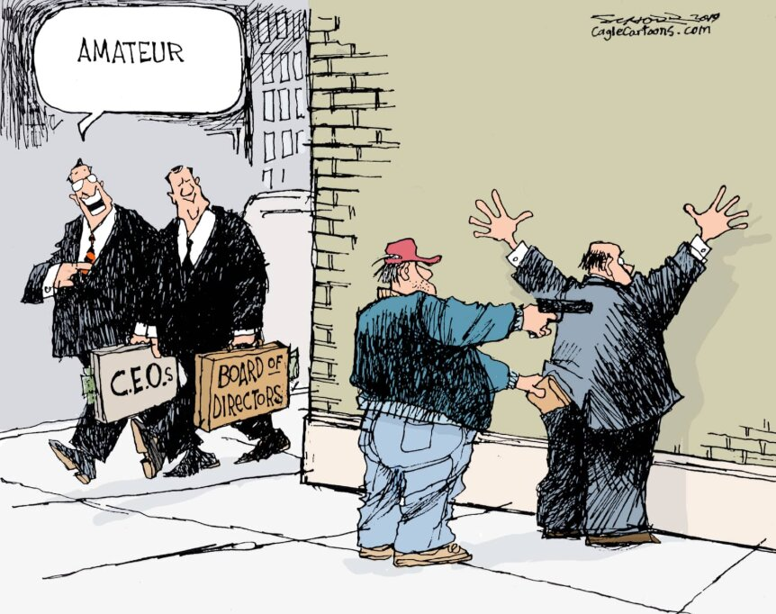
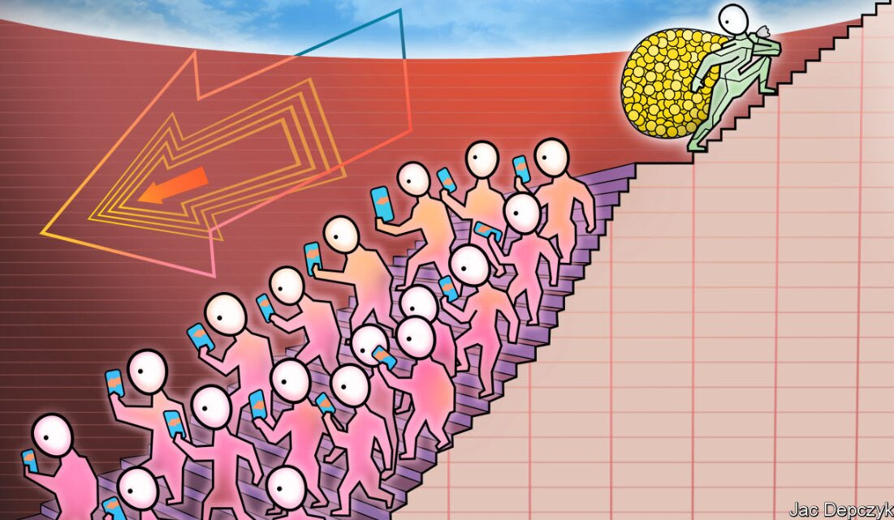

Filler Home Image 1

Filler Home Image 2
This website explores political inequality as a significantly increasing problem in modern democracies. It talks about political influence, participation, and representation, and how those ideas aren't distributed evenly among all people. That imbalance matters, as described, for trust in government, democratic legitimacy, and public decision-making. Through research, case study evidence, visual examples, and policy-oriented solutions, the site shows how political inequality affects different generations and how it remains an increasing issue today, one that only all of us together can solve.